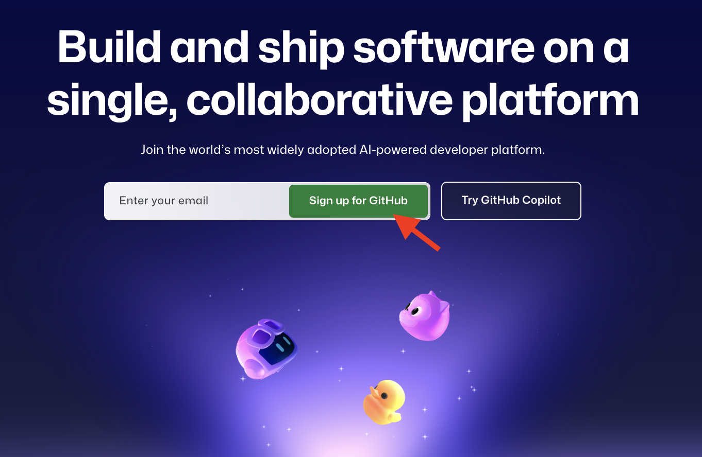

WEB Fundamentals
WDD 130
GitHub Help
In order for dev teams to manage their websites and publish their sites to the web you will need to use GitHub (github.com). On GitHub you store your work in repositories. Repositories keep track of all the changes that everyone on the team makes. GitHub also has a free hosting service called GitHub Pages. This page will go over the basic steps for using these tools.
Important Information
-
GitHub Account

If you need an account, go to github.com and create an account.- Take note of your GitHub username so you can share it with your dev teams.
-
Lead Developer Tasks
- Contact your client and exchange communication information.
- Create the GitHub repository for your client
(name the repository wdd130-clientlastname) - Collect the GitHub usernames from your assigned junior developers and add them to the repository
- Create the index.html page that will be your client's homepage. Write the starter html code with the client's name in the body.
- Publish the site hosted on GitHub pages and post the site url in the repository About section, and in the README file
- Assign each junior developer the page they will code.
-
Junior Developer tasks
- Contact both of your lead developers and give them your GitHub username.
- Request access to the two repositories.
- Create the html files for your assigned pages, and write the start html code for each.
-
Submit
Submit a short report of your progress for this week's task. Be sure to list your lead developer who you hired to develop your site, and the two junior developers you are in charge of, and the two lead developers that you work for.